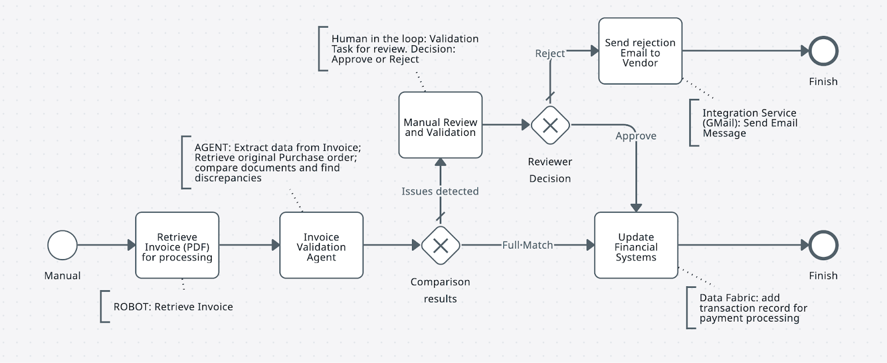

Modeling Business Processes using BPMN canvas¶
Let's start!
1. Review the business process that we will implement
2. Prepare a BPMN diagram reflecting process steps
Goal¶
In this step, you'll design the process flow diagram for the invoice matching automation. You'll review the business process, build it in the UiPath BPMN designer, and export the file for import into Maestro.
The 2-Way Matching Process¶
2-way matching is one of the most common processes in finance — validating a supplier invoice against the original Purchase Order.
Here are the common steps:
- Purchase Order creation — the purchasing department creates a formal PO with item descriptions, quantities, unit prices, and agreed payment terms.
- Invoice receipt and data entry — after the vendor delivers goods or services, they submit an invoice. The Accounts Payable team receives it and enters the data into the accounting system, often via automated extraction (OCR + IXP).
- Document validation — the AP team retrieves the original PO and compares it against the invoice, checking for consistency in key fields: PO number, total amount, price, and line items.
- Companies often set tolerance levels (e.g., a 5% price variance) to determine if minor differences are acceptable. If within tolerance, the invoice moves to approval; otherwise, it is flagged.
- A single PO may be covered by multiple invoices (partial delivery).
- Approval or exception handling — a matching invoice is approved for payment. If a discrepancy exists, the invoice is placed on hold and sent for investigation.
- Payment processing and documentation — the approved invoice is scheduled for payment. All records are stored together for audit purposes.
Matching Variants¶
| Variant | Documents compared |
|---|---|
| 2-way | Invoice + Purchase Order |
| 3-way | Invoice + PO + Goods Receipt Note |
| 4-way | Invoice + PO + Goods Receipt Note + Inspection Report |
Every company has customizations depending on their ERP and industry. This exercise focuses on 2-way matching.
What You'll Build¶
For this exercise, focus on steps 2–4. The simplified process:
- Supplier sends an invoice containing:
- Header (company name, addresses, dates, Invoice ID, PO ID, Company registration ID, etc - the usual fields).
- Line items in a table (Product, Quantity, Price)
- Footer (Subtotals, Totals, Tax information)
- Invoice data is compared against the linked Purchase Order. Possible outcomes:
- Full match: names, quantities, and prices match across all line items, company details, totals, and tax information align.
- Failed match: discrepancies found: wrong company entity, missing line items, unmatched descriptions, or nothing in common at all.
- If the invoice and PO match (or if a human reviewed and approved it): invoice details are updated in Data Fabric and sent for payment.
- If they don't match — a validation task is created in Action Center for the Accounts Payable team to review and then approve or reject.
- If rejected — an email is generated and sent to the supplier with reasons and a request to fix and resubmit the invoice. The resubmitted invoice is processed following the same steps.
Build the diagram¶
-
Open bpmn.uipath.com in your browser.
-
Build a BPMN diagram based on the process description above. It should look similar to this:

-
Export the diagram as a
.bpmnfile. You'll import it into Maestro in the next step. Alternatively, download and use this sample BPMN file.
In later steps, you'll connect each task in this diagram to UiPath platform components. When the process runs, Orchestrator will trigger robotic and agentic jobs — or route tasks to humans. Let's add some action into this diagram by adding a Robot!